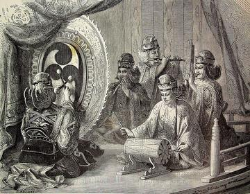
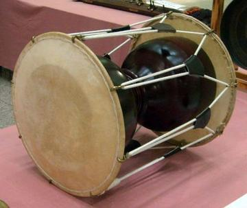

Home / Living Traditions / Southeast Asia and the Islands
Playable heritage gameKendang
The kendang is the long conical drum that leads a Javanese or Balinese gamelan. Its big head gives a deep ring and its small head a quick, bright slap, played with the hands and, in some Balinese styles, with a beater. The drummer signals tempo changes and the ends of phrases to the rest of the players.
How to play
- The drum lies on a woven mat: the big head toward you at the left, the small head to the far right, straps between them.
- Dung is the open centre of the big head and Tak a slap at its edge. Tong is the centre of the small head and Ket its sharp edge.
- Wood is a tap on the body of the drum.
- A ring closes on the place to strike. Strike as it lands.
Rules at a glance
- A stroke on the beat is perfect, a near one is good, and extra strokes cost points.
- Each pattern repeats twice.
- The patterns count four beats to the bar.
About the tradition
Gamelan players follow the kendang. A change in the drummer's pattern tells the whole ensemble to speed up, slow down or end, so the drum is closer to a conductor than to a beat keeper.
Origins
A living tradition passed from person to person; it is not tied to a single dated origin. It belongs to the cultural world of Southeast Asia and the Islands.
Credits
- Tradition: the Kendang; patterns written for this game
- Text: CC BY-SA 4.0, World Heritage Games.
Sources

Get the app
Kendang is one of 11 drums and percussion in the Asian & Island Percussion app for Android. Submitted to Google Play; in review. Store links appear here the day it goes live. One app, many traditions, no account needed.
More games to play




More from Indonesia

Angklung bamboo chime ensemble
Indonesia · Musical instruments

Batik wax-resist pattern studio
Indonesia +1 · Crafts and makingPlay preview · in the Textile Crafts of the World app


Cublak-cublak suweng
Indonesia · Street and playground games